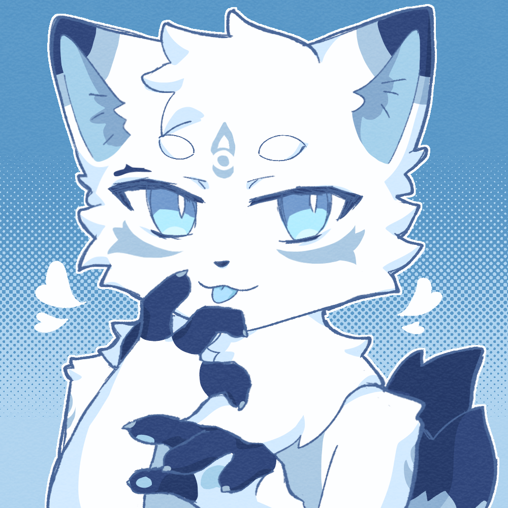
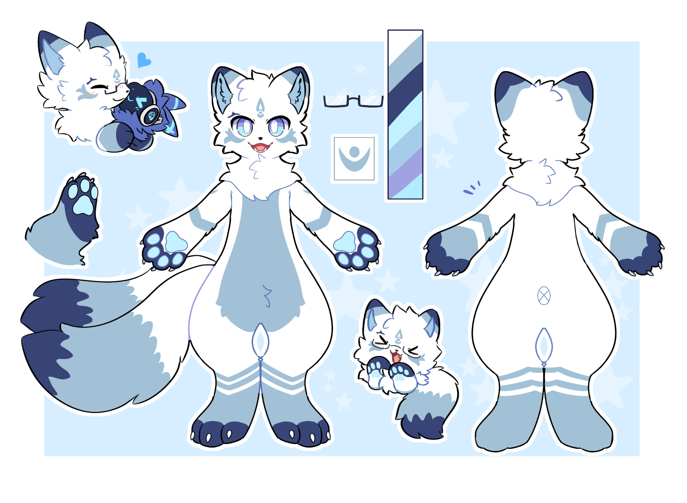

Thêm một ván nữa.
Từ game âm nhạc đến những trận Guilty Gear Strive. Đôi khi chơi để thử thách bản thân, đôi khi chỉ để chill.
Game / Anji MitoHewwooo, mình là Ginji. Một “con céo” chill chill thích đi ngẩu. Chào mừng bạn đến với profile của mình nheee~

Bạn có thể gọi mình là Ginji, CoCo hoặc Ceo. Hiện tại mình đang học Luật, còn ngoài giờ học thì thường tìm đến game, âm nhạc và những khoảng thời gian được thảnh thơi một chút.
Mình khá dễ tính, chỉ hơi thụ động khi bắt chuyện thôi. Nếu muốn làm quen, cứ chủ động chào mình nhé.
NGOÀI GIỜ HỌC
Từ game âm nhạc đến những trận Guilty Gear Strive. Đôi khi chơi để thử thách bản thân, đôi khi chỉ để chill.
Game / Anji MitoMột playlist hợp tâm trạng và thời tiết hơi xám một chút. Vậy là đủ cho một khoảng nghỉ mình thích.
Âm nhạc / Những phút thảnh thơiHọc thêm vài từ, hiểu thêm một câu. Mình thích cảm giác dần chạm đến một ngôn ngữ khác.
Ngôn ngữ / Từng bước nhỏMột chiếc cáo với bộ lông trắng, những mảng xanh băng và điểm nhấn tím chàm. Ginji thường xuất hiện với hai chiếc đuôi — một phiên bản khác của mình trong thế giới furry.
#FFFFFF#BDEEFF#A3C3D5#394473#A3A2DE
Một chút về thế giới của Ginji.
Một góc dành cho những artwork sắp tới của Ginji.
MỘT LỜI CHÀO
Nếu bạn cũng thích game, âm nhạc hay chỉ muốn trò chuyện một chút, có lẽ chúng mình sẽ có chuyện để kể.
Mình có thể hơi chậm mở lời. Nhưng rất vui khi bạn ghé qua.